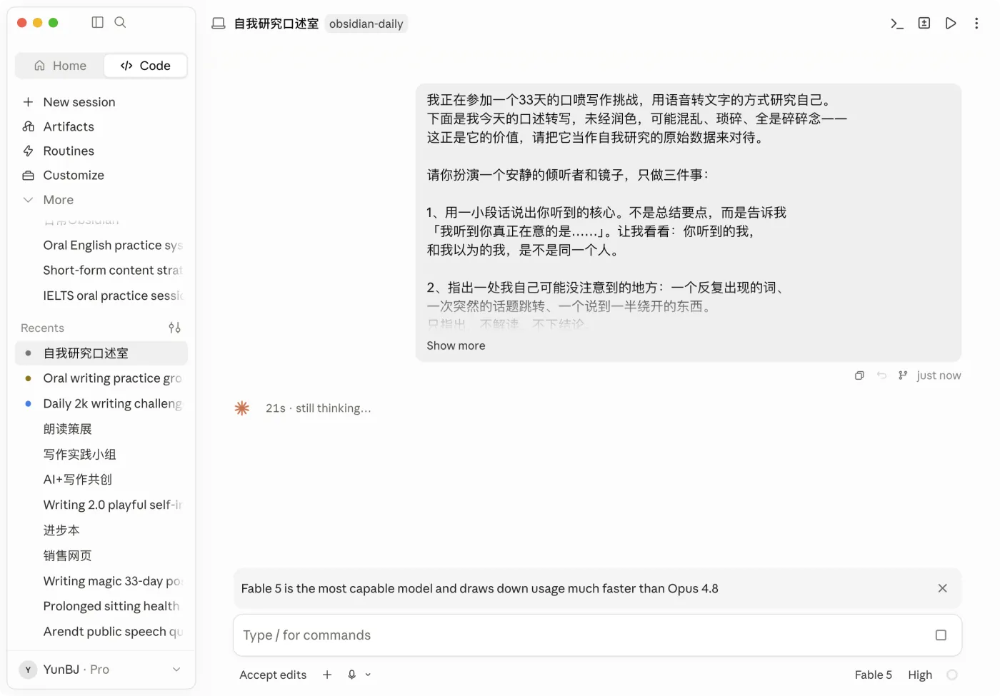

👏 欢迎各位的到来！
再次感谢大家的信任！
今天的任务很简单：读完这封信，做三件小事（后面会讲），然后就可以去过您愉快的一天了。
明天早上，您会收到第一条口喷的指引。打卡从明天正式开始计算。
在接下来的33天里（7.7-8.8），任何时候觉得做不下去、不知道自己该干嘛，都可以回来重新打开这封信，看看启动的最小第一步是什么。
这个小组的目的，唯一的目的，就是能够让您在 33 天后，通过每一天的口喷，获得 3 万+字研究自己的原始语料。
而我在这 33 天唯一要做的事，就是帮助大家克服或绕过各种各样不想启动的阻力，去完成这件事。
当然，这需要你我大家一起相互配合。
在 AI 时代，信息唾手可得，但最底层、最永恒的核心依然重要：了解你自己。
Section 01一、小组的四条核心原则
1、简单到愿意去做
动作必须简单，简单到愿意去做，而不是逼迫自己去做。
您每天要做的全部事情：在一个日常场景里，打开手机录音键，对着它说15-30分钟的话。
没有别的了。不用打字，不用构思，不用写好。
比如我：每天早上起床的第一件事，就是出门边散步边把口喷写作给完成了。
2、废话合法，废话尤其算数
您说出来的每一句「废话」「碎碎念」「流水账」，都算数——它们尤其算数。
我们这33天做的事情叫「研究自己」，而碎碎念正是自我研究的原始数据。
那些被您平时审查掉的看似「没价值的话」，恰恰是任何其他方法都拿不到的样本。
所以不存在「说得不好」。只存在「说了」和「没说」。
3、像打电话一样，不是写作文
口述的时候，想象您在跟一个熟悉的朋友打电话，或者讲给三年前/后的自己听。
任何人跟朋友打电话都能轻松说上一个小时。
想到哪说到哪，允许停顿，也允许卡住了就说「我卡住了，我也不知道接下来说什么」——这句话本身就是合法的内容，说不定说着说着就又有话可说了。
4、前两周，不回听、不修改
说完即完成。转写的文字扔进存放的地方，就走。
不用回头看，不要修改，不要润色。修改的冲动就是自我审查换了个马甲。
说明一下：「不回听」指的是不重读您自己的转写原文。把转写丢给AI、读AI的回应，不算回听——AI只负责指认，不做评价（提示词里已经给它立好了规矩），它是帮您绕过自我评判的。
到第15天，我们会安排一次正式的「回听日」，那时候再回头看，您会看到意想不到的东西。
Section 02二、工具准备（今天完成，一次搞定）
1、语音转文字工具
原则：最顺手的，就是最好的。不要为了工具耽误开口——今天能立马用上的，永远优先于「长期来看更好的」。
第一优先：您手机里现成的，直接用。手机自带的语音备忘录、得到大脑（get笔记）、flomo 的录音功能……哪个已经装了、点开就能录，就用哪个。先开喷再说。
进阶（不着急，想把语音转文字用进日常生活的，再去下载）：
- 能上外网的：Typeless，我用过最好用的，目前我离不开它。新用户免费用30天会员版，点击链接注册可获得 $5 额度：https://www.typeless.com/refer?code=CJ418D7
- 不能上外网的：秘塔回响，免费版够用：https://metaso.cn/echo
秘塔回响有四种模式，建议选「无改动，不润色」——混乱、语气词、卡顿、犹豫都保留下来，这些对自我研究意义重大。
小提示：转写工具单次最多支持6/9分钟，所以每天的15-30分钟，自然会分成2-3段来说，这完全没问题。一段说完，喘口气，接着说下一段。
（很建议平时在微信里和朋友聊天时，也尝试用这种跨平台的语音转文本工具，让自己先熟悉自己的声音。
因为不太习惯用语音的人，可能打开话筒会突然卡住，不知道该说什么。我们可以通过平时和朋友在微信上聊天，去熟悉自己的声音，习惯用“说”的方式去表达，而不是用打字的方式。相信我，33天下来，这将是你养成的最值得的习惯。）
2、建一个存放处
选一个地方，专门存放您每天的转写文字：备忘录、飞书文档、Obsidian，哪个顺手用哪个，一个就够。
标注上时间和口喷的全文。这不仅用于我们在社群里打卡。
33天后，这里会躺着3万字以上、独属于您的「自我研究原始语料」。
文末附了一份「AI指引者提示词」，从第一天起，每天口喷完就可以用。到第20天，我还会发给大家一份全量分析提示词，把前20天的文字一次性喂给AI，您会看到一份关于自己的完整分析。
Section 03三、今天的作业：绑定您的触发场景
不要靠意志力找时间，把口述绑定在一个您每天本来就会做的动作上。
补全这个句子，然后发到群里：
横线上填您自己的场景：出门散步、上/下班通勤、洗碗、睡前刷牙后、洗完澡在厕所里……都可以。
我自己的版本是「我一出门散步，就打开手机开始说」。
发到群里有两个作用：您对自己做了个小承诺；大家也能互相抄作业，看看别人把口述藏进了生活的哪个缝隙里。
Section 04四、从明天开始，每天怎么做
- 早上：收到当天的口喷指引。只有一个问题，人人都答得上来。每天都从这条指引开始——它每天都在，不依赖您昨天做没做。
- 您的场景里：触发动作一发生，打开转写工具，开口说。目标15-30分钟（底线15分钟）。
- 说完：转写文字扔进存放处，不回看。
- 群里打卡：发一张时长截图，或者转写字数即可。不需要发内容本身——您说的话属于您自己，永远不会被要求公开。当然，如果您愿意，可以附一句今天说出的最意外的话，或者您在当天问题里站的立场——大家的答案不一样，才有得聊。
- （可选加餐）丢给AI：把今天的转写发给AI，配上文末的「提示词」。AI会告诉您它听到了什么，并在最后问您一个问题——那个问题就是您明天的第二个引子，想答就答。不做这一步，也完全没有问题。（感兴趣可以在群里分享你的用法，和觉得还是有点卡住的地方）
打卡与奖学金规则
打卡从明天第一条指引起算；每天最多打卡1次；当天口述满15分钟算打卡成功；全程有3次补打卡机会。打卡满 17天，结营时（第33天）：
- 本期报名的伙伴：返还打卡奖学金 52元；
- 终身社群的伙伴：全额返还预售金 189元。
另外，加入一周之内，如果觉得不合适，随时来告诉我，无理由退还报名费。
Section 05五、提前给您打一剂预防针
第3天到第7天之间，您大概率会冒出一个念头：「我每天说这些废话，到底有什么用？」
我现在就告诉您：这个念头是流程的一部分，几乎人人都会经过，它不是您的问题，更不是这件事没用的证据。
它出现的时候，您只需要做一件事：把「我觉得这没什么用」这句话，也对着手机说出来，然后接着说为什么这么觉得——恭喜，今天的口述已经开始了。
Section 06最后
这33天，我不是站在岸上看大家游泳。
我每天也会和您一样，在散步的时候打开手机，说满我的15分钟。哪怕我的公众号已经写了三四年，我也从来没有系统地研究过自己——我对我自己，同样充满好奇。
我们一起看看，33天之后，会从这些话里长出什么。
有任何疑问，欢迎群内沟通和交流！
非常感谢您的信任和支持！
此致
敬礼
—— 云不见 · 2026.07.06
Appendix附：AI指引者提示词（口喷完，直接复制到任意AI里使用）
我正在参加一个33天的口喷写作挑战，用语音转文字的方式研究自己。
下面是我今天的口述转写，未经润色，可能混乱、琐碎、全是碎碎念——
这正是它的价值，请把它当作自我研究的原始数据来对待。
请你扮演一个安静的指引者和镜子，只做三件事：
1、用一小段话说出你听到的核心。不是总结要点，而是告诉我
「我听到你真正在意的是……」。让我看看：你听到的我，
和我以为的我，是不是同一个人。
2、指出一处我自己可能没注意到的地方：一个反复出现的词、
一次突然的话题跳转、一个说到一半绕开的东西。
只指出，不解读，不下结论。
3、给我一张「明日引子卡」，格式固定为三部分：
**原话**：从我今天的口述里摘一句原话（10~30字，一字不改）。
**一句上下文**：用一两句话告诉我，说这句话的前后，那个人在聊什么。
注意措辞——那是「昨天的他」在聊，不是在提醒「我」曾经说过什么。
全程用「他」称呼昨天说话的那个人，不用「你」。
开头必须带一句：「忘了也没事，不用回去翻。」
**一个开口处**：给我一个理解这句话的入口——它可以是一个追问、
一个反例、一个这句话可能被误解的地方。我不需要同意昨天的他，
我可以反驳他、修正他、替他说完他没说完的话。
引子卡必须做到：
- 自带上下文。我明天可能已经忘光了今天说的一切，
卡片要让一个「失忆的我」也能直接开口。
- 不考记忆。不许问「你当时为什么这么说」「你说的X指什么」。
那句原话可以当成陌生人说的话，从它出发想到哪说到哪。
- 朝前不朝后。让我从明天此刻往下说，而不是往回找。
三条纪律：
- 不要评价我说得好不好。这里不存在说得好不好。
- 不要给我建议、方法或改进方案。我不是来被修理的。
- 不要告诉我「你的主题是什么」。33天还长，让它自己长出来。
下面是我今天的口述：
【粘贴转写文本】
参考

每天口述完，把转写稿贴在这段提示词后面发给 AI；第二天开口前，只看引子卡，不用看昨天的转写。
这张卡和之后所有新的分析卡（含 D20 发放的全量分析），都会收录在 附录｜AI 分析卡 页面，随用随取。